Education Papers & Publications
Nursing Education Papers
The following are NCSBN education papers that have been written and approved since 2002, by the NCSBN Board of Directors and all NCSBN voting members at our Delegate Assembly. The papers are listed in the order they were adopted.
-
Report on BON Approval Survey- 2017
A survey was disseminated to the BON, inquiring about their approval processes. The attached, contains the weighted average of Questions 1 & 2 along with a summary report.2017 | Publication
-
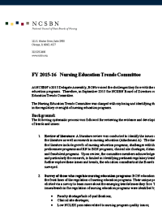
2016 Nursing Education Trends Committee Report
NCSBN’s 2015-16 Nursing Education Trends Committee was charged by the Board of Directors to explore and identify trends and issues in the regulatory oversight of nursing education programs. This report summarizes the committee findings and includes the literature review that was developed as a foundation for this work.
2016 | Publication
-
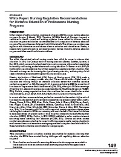
White Paper: Nursing Regulation Recommendations for Distance Education
Background and literature review on the regulation of prelicensure distance education programs; regulatory issues; recommendations for BONs; visual model and timeline for adopting the recommendations.
2014 | Publication
-
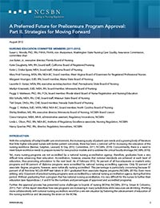
2012 Prelicensure Nursing Program Approval
This is Part II of the Nursing Education Committee document, which contains strategies for moving forward on the future of approval of BONs. As part of this work, the committee members hosted a World Cafe' meeting, where the participants dialogued about the alignment of approval, education and accreditation. See the monograph that resulted from that World Cafe' meeting.
2012 | Publication
-
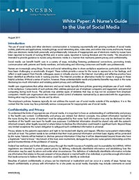
A Nurse's Guide to the Use of Social Media
NCSBN's Disciplinary Resources Committee studied the increasing use and misuse of social media in health care.
2011 | Publication
-
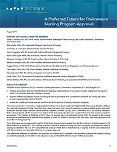
A Preferred Future for Prelicensure Nursing Program Approval
NCSBN's Nursing Education Committee wrote a report on the first year of their work in analyzing and making recommendations for the future of approval by Boards of Nursing. This report was approved in May 2011, by NCSBN's Board of Directors.
2011 | Publication
-
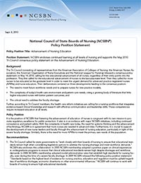
2010 Policy Position Statement
Position statement on the advancement of Nursing Education. NCSBN's Board of Directors endorses continued learning at all levels of nursing and supports the Tri-Council consensus policy on the advancement of Nursing Education.
2010 | Publication
-
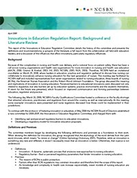
Innovations in Education Regulation Report
This report of the Innovations in Education Regulation Committee details the history of the committee and presents the definitions and recommendations; a synopsis of the literature; a full report from the collaborative call held with education leaders; and a discussion of the influences that affect innovations, particularly regulatory influences.
2009 | Publication
-
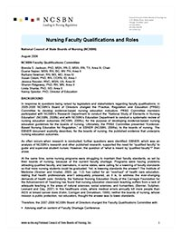
Faculty Qualifications Paper
Faculty Qualifications.
2008 | Publication
-
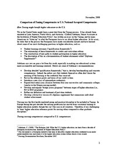
Comparison of Tuning Competencies to U.S. National Accepted Competencies
This paper compares the European Tuning model of nursing education with : AACN's Baccalaureate Essentials; NCLEX Activity Statements; NLN Associate Degree Competencies, and the QSEN Competencies.
2008 | Publication
-
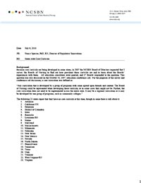
2007 Core Competencies Paper
NCSBN surveyed Boards of Nursing to see which jurisdictions have core curricula, and these are outlined in this document. This document also contains a list of nursing program definitions by the education consultants of Boards of Nursing (such as one-plus-one, PN Exit, generalist, etc) because the terminology has become confusing.
2007 | Publication
-
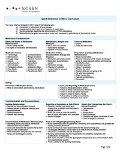
Medication Assistant-Certified (MA-C) Curriculum - 2-page instructor’s Quick Reference to the Curriculum
Document for assessing whether students have mastered the major areas of content. Each module contains recommended didactic and skills hours, as well as objectives, a content outline, evaluation criteria, and suggested references.
2007 | Publication
-
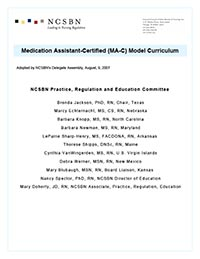
Medication Assistant-Certified (MA-C) Curriculum
The Medication Assistant Curriculum was adopted by the 2007 Delegate Assembly for those boards that regulate medication assistants. The curriculum includes a preamble that explains the use of the curriculum, the background of its development, recommended hours of training and admission requirements, and defines the terms being used. The curriculum itself includes 5 didactic modules in medication fundamentals, safety, communication and documentation, medication administration, and ethical legal, along with a clinical practicum module.
2007 | Publication
-
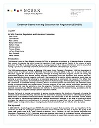
The Evidence-based Nursing Education for Regulation (EBNER) report
This report was written after 4 years of work identifying evidence-based nursing education strategies that are essential for preparing new nurses for safe entry-level practice. These recommendations are based on a systematic review of outcomes research in nursing education, as well as NCSBN's own education studies. Adopted August, 2006.
2006 | Publication
-
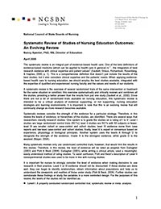
Systematic Review of Studies on Nursing Education Outcomes: An Evolving Review
This paper critically reviews the available research on methodologies used to educate nurses, particularly looking at those studies that identify outcomes. Specified criteria were used for selecting the studies, and each study was reviewed with regard to: sample, comparison studied, procedures, key results, strengths and weaknesses, and implications for boards of nursing. Adopted August, 2005.
2005 | Publication
-
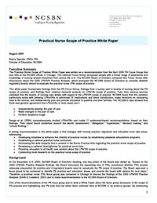
Practical Nurse Scope of Practice White Paper
This paper was written after NCSBN brought in a focus group of LPN/VN experts from around the country. The paper reviews the rich discussion that took place at the focus group, presents internal and external research findings of the PN scope of practice, and reviews surveys that were sent to boards of nursing and external PN groups. The paper makes six recommendations. Adopted August, 2005.
2005 | Publication
-
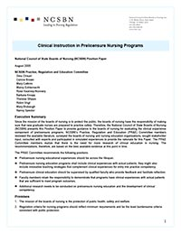
Clinical Instruction in Prelicensure Nursing Programs
This position paper identifies premises and defines relevant terms. There is a review of selected nursing education research and articles, and the committee members who wrote this paper consulted with simulation experts and participated in actual simulation. Input was sought from the boards of nursing and stakeholders. Five recommendations were made. Adopted August, 2005
2005 | Publication
-
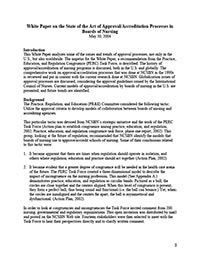
White Paper on the State of the Art of Approval/Accreditation Processes in Boards of Nursing
This paper reviews the history of approval/accreditation in the U.S. as well as the international view of the regulation of nursing programs. The six models used by the U.S. boards of nursing to approve/accredit nursing programs are identified, recommendations are made, and future trends are identified. Adopted August, 2004
2004 | Publication
Nursing Education Publications
The following is a list of articles and book chapters written by NCSBN staff and members found in NCSBN's journal and other journals and books.
-
Board of Nursing Approval of Registered Nurse Education Programs
Read about the current status of the regulatory approval of nursing education programs in the United States. What are the challenges and opportunities for the future of program approval?2018 | Publication
-
A Multisite study on graduate registered nurse transition to practice program: Return on Investment
A Multisite study on graduate registered nurse (RN) transition to practice (TTP) program: return on investment.2017 | Publication
-
Newly Licensed RN retention: Hospital and Nurse Characteristics
Newly licensed RN retention: hospital and nurse characteristics.2017 | Publication
-
Preceptor support in hospital transition to practice programs
Preceptor support in hospital transition to practice (TTP) programs.2015 | Publication
-
The National Council of State Boards of Nursing transition to practice study: Implications for educators
NCSBN's Transition to Practice (TTP) study: implications for educators.2015 | Publication
-
NCSBN simulation guidelines for prelicensure nursing programs
The National Council of State Boards of Nursing (NCSBN) published the results of the largest, most comprehensive study to date concerning the use of simulation as a substitute for traditional clinical experience. Results of the study, which were published in 2014, demonstrated that high-quality simulation experiences could be substituted for up to 50% of traditional clinical hours across the prelicensure nursing curriculum. An expert panel convened by NCSBN evaluated the data gathered through this study, examined previous research and the International Nursing Association for Clinical Simulation and Learning Standards of Best Practice: Simulation, and used their collective knowledge to develop national simulation guidelines for prelicensure nursing programs. This article presents those guidelines, evidence to support the use of simulation, and information for faculty and program directors on preparation and planning for using simulation successfully in their nursing programs.2015 | Publication
-
Transition to practice in hospital settings
Transition to Practice (TTP) in hospital settings.2015 | Publication
-
A Collaborative Model for Approval of Prelicensure Nursing Programs
Currently, boards of nursing (BONs) use seven different models for approving nursing programs, and nursing education rules and regulations in BONs are not consistent across jurisdictions. In 2010, the National Council of State Boards of Nursing’s (NCSBN) Board of Directors convened a committee to assess the state of prelicensure nursing program approval in BONs and to make recommendations to the NCSBN’s board based on current and future needs. This article describes the committee’s collaborative engagement with national accreditors and the recommendations that resulted.2013 | Publication
-
Guidelines for Using Electronic and Social Media: The Regulatory Perspective
Social media can be a very effective way of communicating in nursing, but guidelines for appropriate use by healthcare providers are essential. This article briefly introduces the phenomenon of social media and introduces three actual scenarios where nurses unintentionally violated appropriate use of social media in healthcare. The scenarios are discussed related to social media, career, concerns, and nursing regulation. Incorporating these and other examples with data from board of nursing cases, the nature of complaints against nurses is explored as well as common myths and misunderstandings about using social media platforms. Guidelines for appropriate use by nurses and available resources to inform policy are highlighted. Next steps in social media in nursing should include development of organizational level policies and educational programs on the use of social media.2012 | Publication
-
New Graduate Transition into Practice: Improving Quality and Safety (Chapter)
There is evidence linking improved patient care to standardized transition to practice programs in the areas of safety, competence, and retention. This chapter explores that evidence, presents a standardized model as a solution, and gives examples of transition program models, as well as an overview of NCSBN’s Transition to Practice model.2012 | Publication
-
Transition to Practice: An Essential Element of Quality and Safety (Chapter)
This chapter describes the importance of transitioning new graduate nurses to practice, and the impact of such transitions on patient care.2012 | Publication
-
What Nurse Educators Should Consider When Developing Social Media Policies
Social media offers many opportunities to promote student engagement and interactivity; however, student nurses must be instructed in the appropriate use of this tool. It is important for nursing programs to develop sound policies related to social media. This article suggests social media policy guidelines and presents several tools for nurse educators to utilize while implementing their own policies.2012 | Publication
-
The Initiative to Advance Innovations in Nursing Education: Three Years Later
Calls for innovation in nursing education have been prevalent in recent years. In 2009, the Innovations in Education Regulation Committee, convened by the National Council of State Boards of Nursing (NCSBN), worked collaboratively with other stakeholders to identify perceived and real barriers to innovation in nursing education and proposed model rules and statute language that boards of nursing could adapt to foster innovations in their state’s nursing programs. The model language was unanimously adopted by NCSBN’s Member Boards. Since then, NCSBN has conducted three surveys to determine the impact of NCSBN’s initiative as well as the state of innovations in nursing education. Following a review of the committee’s work, this article presents survey data on innovation in nursing education over the last 3 years.2012 | Publication
-
National Council of State Boards of Nursing's Transition-To-Practice Regulatory Model (Chapter 10)
This chapter gives an overview of NCSBN’s Transition to Practice model.2011 | Publication
-
Are We Pushing Graduate Nurses Too Fast? Agency for Healthcare Research and Quality Mortality and Morbidity Rounds
How do newly licensed RNs transition from an educational environment to practice to assure safe patient care? This article examines a case study that highlights this issue, and discusses indicators that support a standardized transition to practice program for all newly licensed nurses.2011 | Publication
-
Quality of Care and Patient Safety: The Evidence for Transition-To-Practice Programs (Chapter 3)
This chapter reviews the evidence for the need to transition new graduates into competent and safe nurses.2011 | Publication
-
Nurses and Social Media: Regulatory Concerns and Guidelines
Social Media possess tremendous potential for strengthening professional relationships and providing valuable information to health care consumers. However, the inappropriate use of social media by nurses is causing concern among educators, employers, and regulators, and nursing organizations are beginning to develop guidelines. When using social media, nurses must protect the patient’s rights to privacy and confidentiality and consider the potential effects of their communications on their patients, their employers, their profession, and themselves. This article describes the professional, ethical, and legal implications of using social media inappropriately and provides guidelines from the National Council of State Boards of Nursing for using them appropriately.2011 | Publication
-
Evidence-Based Nursing Regulation: A Challenge For Regulators
These are complex times for regulators on nursing boards, particularly in three areas. First, they must stay abreast of emerging practice issues emanating from technological advances, systems thinking, a more diverse patient population living longer with multiple chronic illnesses, and a national focus on patient safety and error prevention. Second, there has been a national call for the transformation of nursing education, and nursing boards are seeing increasing numbers of substandard or fraudulent nursing education programs. This adds to the boards’ workload. Third, disciplinary activity involving nurses has increased during the last 10 years, forcing regulations to stay on their toes regarding disciplinary action and investigation. In this challenging climate, the time is ripe to focus on evidence-based regulation as a strategy for making quality decisions related to regulation.2010 | Publication
-
2009 Update on the National Council of State Boards of Nursing’s Regulatory Model for Transitioning New Nurses to Practice
This article outlines the background of NCSBN’s Transition to Practice initiative and the development of the Transition to Practice Model.2010 | Publication
-
Use of Simulation in Nursing Education: National Survey Results
While simulation in nursing programs continues to increase, it is important to understand the prevalence of this new technology in nursing education, how this technology is utilized, and how educators are preparing to teach with this educational tool. This article reports on the results of a survey conducted by the National Council of State Boards of Nursing of 11,060 pre-licensure nursing programs in the United States as a means of describing use of simulation.2010 | Publication
-
A Regulatory Model for Transitioning Newly Licensed Nurses to Practice
This article discusses the importance of developing a national, standardized program, implemented through regulation, for transitioning all newly licensed nursing graduates to practice.2010 | Publication
-
Interprofessional collaboration: A nursing perspective. (Chapter 6)
The book addresses the importance of interprofessional collaboration, while this chapter presents interprofessional collaboration from a nursing standpoint. While this may seem counterintuitive, it is understood that each discipline approaches collaboration from its own perspective, and understanding these perspectives is crucial to the success of interprofessional collaboration.2009 | Publication
-
Regulatory Recommendations for nursing faculty qualifications
The NCSBN Board of Directors charged an NCSBN committee with reviewing and presenting recommendations for future faculty qualifications and roles.2009 | Publication
-
Approval: National Council of State Boards of Nursing
This chapter takes the reader through the inception and process of professional regulation, highlighting distinctions and overlap between accreditation and approval. Rationale and preparation for site visits are detailed, along with the recently written Model Nursing Practice Act.2009 | Publication
-
Transition to Practice: Improving Patient Outcomes
This chapter examines the evidence that a standardized transition program for new graduate nurses has a positive impact on patient safety.2009 | Publication
-
Clinical Education and Regulation (Chapter)
This chapter explores in detail the regulatory perspective on clinical education in nursing and why boards of nursing take the position that nursing programs need to provide supervised clinical experiences for their students. Some of the myths about regulatory barriers are dispelled, and some of the differences among boards are discussed. Current issues, such as the regulatory perspective on simulation in prelicensure programs and the use of exit exams are also explored. The importance of the collaboration between education, practice and regulation is integrated throughout.2009 | Publication
-
Regulation Fosters Innovations in Nursing Education
Because of the complexities in nursing and healthcare delivery and a national focus on patient safety, there has been a call across nursing organizations and healthcare organizations for more innovation in nursing and healthcare education. The National Council of State Boards of Nursing held an invitational roundtable, involving representatives from nursing education organizations, boards of nursing, the American Nurses Association, and the Robert Wood Johnson Foundation. Topics of discussion included the meaning and implications of innovation in nursing education, perceived barriers to innovation, and the future of innovation. This article summarizes the outcomes of the roundtable’s discussion.2009 | Publication
-
A Transition To Practice Regulatory Model: Changing the Nursing Paradigm
This article discusses the factors that inspired a call for an evidence-based regulatory model for transitioning new nurses to practice, and gives an overview of the Transition to Practice model being developed by NCSBN.2009 | Publication
-
A Regulatory Model on Transitioning Nurses from Education to practice
NCSBN data show that most employers reported that new graduates were not prepared to provide safe and effective care. Although educators may argue that employers are expecting too much from new graduates, this evidence supports that the gap between education and practice still exists.2007 | Publication
-
Development of a standardized medication assistant curriculum
The National Council State Boards of Nursing took the position in their 2004 Model Nursing Practice Act and Model Administrative Rules, Article XVIII, Chapter 18, that if jurisdictions use medication assistants, they should be regulated by Boards of Nursing.2007 | Publication
-
Worldviews in collision: Conflict and collaboration across professional lines
The process of providing health services in hospitals is inherently interdisciplinary; many of the challenges to enhancing quality and safety involve the human aspects of this interdisciplinary system. Each of the major disciplines—physicians, nurses, allied health providers, and health administrators—represent qualitatively distinct sets of goals and professional values, influencing not only current behavior but also who chooses these roles in the first place.2006 | Publication
-
Exit Exams: A regulatory perspective
A significant role for most state boards of nursing, whose mission is to protect the public, is the approval of nursing education programs in their state. As part of this process, many of the state boards review their schools’ annual pass rates of first-time NCLEX-RN candidates and compare these percentages to state regulations. Schools whose pass rates fall below the state standard risk losing the approval of their state board of nursing.2006 | Publication
-
Evidence-Based Nursing Education for Regulation
Since Boards of Nursing are mandated to approve nursing programs, the boards are interested in knowing the evidence-based elements of nursing education that are essential for preparing new nurses for safe entry-level practice.2006 | Publication
-
NCSBN takes a stand on clinical prelicensure experiences
Recent discussion at the boards of nursing has focused on whether nursing programs leading to initial licensure can successfully educate nurses with alternative methodologies that take the place of traditional clinical experiences. Programs are asking for education rules addressing faculty qualifications to be waived and are developing programs with only limited clinical experiences with actual patients.2006 | Publication
-
Evidence-Based Health Care Seen from Four Points of View (Chapter 22)
Evidence-based health care (EBHC) and its approach to the practice of medicine has gained considerable acceptance among health care professionals. The Association of American Medical Colleges (AAMC) advocates integration of the principles of evidence-based medicine (EBM) into undergraduate training. Promoted as a tool to further learning by inquiry, to steer clear of opinion-based medicine (Sackett et al., 2000), and to help students at all levels of training to assess conscientiously the current best evidence, an increasing number of medical schools in the United States have incorporated it into their curriculum.2006 | Publication
-
Global initiatives in regulation at NCSBN
Recognizing the importance of the global perspective in regulation the National Council of State Boards of Nursing (NCSBN) developed as one of its 6 strategic initiatives the following: “Advance NCSBN as a key partner in nursing and healthcare regulation in the U.S. and internationally.” There are several objectives in place to meet this initiative.2005 | Publication
-
Focus group on licensed practical nurse scope of practice at NCSBN
The National Council of State Boards of Nursing convened a focus group to discuss the findings of the 2003 Licensed Practical Nurse/Vocational Nurse (LPN/VN) practice analysis and to make recommendations to the NCSBN board of directors.2005 | Publication
-
Regulations, Licensure and Policy Breakout Session
The challenge to regulatory boards has always been maintaining the balance between an individual's desire to practice a chosen profession and the board's responsibility to protect the public from unsafe practitioners. Reasonable people can differ in how best to protect the public. And our boards vary in their approaches to a number of issues. I think many regulators recognize that providing access to nursing care is part of protecting the public.2004 | Publication
-
Building a sphere of influence
Individuals and organizations involved in nursing regulation, education, and practice can effectively increase their influence related to nursing regulation and improving health care in several ways.2004 | Publication
-
Ethics in practice: NCLEX results to disclose or not disclose
Individuals and organizations involved in nursing regulation, education, and practice can effectively increase their influence related to nursing regulation and improving health care in several ways.2004 | Publication
-
A primer: The national council of state boards of nursing nurse licensure compact
The National Council of State Boards of Nursing began exploring the mutual recognition model of nurse licensure. This model, which NCSBN called the Nurse Licensure Compact (NLC), allows a nurse to have one license and to practice in other states as long as that nurse acknowledges that he or she is subject to each state’s practice laws and discipline.2004 | Publication